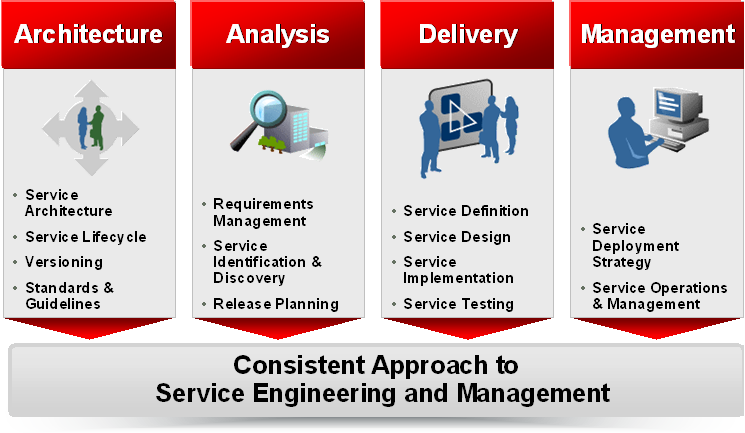

OUM |
SOA Engineering Planning Supplemental Guide |
||
Method Navigation |
Current Page Navigation |
||
|
|
||||||||
This document contains OUM supplemental task guidance for the execution of a service based on the SOA Engineering Planning view.
The task guidelines in this document should be used to supplement the guidelines that appear in the OUM Task Overview.
Mobilization begins with the qualification of the effort to scope the engagement to best meet the needs of the organization. An engagement may be based solely on this view, but may also be increased to cover multiple views to produce a more full-featured planning and delivery engagement. In particular it may be combined with the SOA Modeling Planning view. It may also be scoped back to focus on only a subset of the six areas covered in this view, streams, tasks, and work products, while omitting others.
Use a set of interviews and meetings with the organization to assess the maturity of the organization with respect to SOA and specifically, SOA engineering. Clarify the objectives and scope of the engagement. Identify the stakeholders from the organization needed to participate and create a detailed project plan. Agree on the scope and plan with the organization.
This area involves the following roles:
Role |
Responsibility |
|---|---|
Implementing Organization |
|
| Enterprise Architect | Assess and understand the maturity of the organization and suggest a scope for the engagement. Be familiar with the material from SOA Reference Architecture Planning and all OUM techniques available for this engagement. |
| Enterprise Repository Manager | Support the enterprise architect on assessment and identify the topics relevant for the organization. Needs to be a specialist on OUM with project experience in SOA engineering. |
Customer (User) |
|
| Customer Project Sponsor | Agree on the scope of the engagement. |
| Customer Project Manager | Identify the stakeholders needed in the engagement and ensure their availability and commitment |
| Enterprise Architect | Provide insight into the SOA strategy and approach of the organization. Responsible for enterprise SOA or enterprise architecture in general at the organization. |
| Methodologist | Provide insight into the approach to SOA and how this is mapped into the Software Development Lifecycle (SDLC) of the organization. Responsible for the SDLC of the organization. |
The engagement lead is primarily responsible for determining the scope of the engagement. The areas and work products should be aligned with organization objectives, and the activities should support successful completion of the work products.
There are common areas of SOA engineering that are common across all SOA deployments and should be covered by any organization adopting SOA. The depiction below provides a summary of the OUM SOA engineering approach:

Topics covered by SOA engineering include:
With the proper engineering approach in place, the SOA can be started from the ground up and will grow effectively from project to project.
In addition to determining the topics for SOA engineering, you should strongly consider including instrumentation for monitoring and management related to the other subjects the organization chooses to include in the scope of the engagement. Instrumentation, with respect to business and particularly IT has been around for a long time. However, it has not generally been utilized as a core component of any particular IT strategy. Quite often it is introduced as an afterthought, or as a missed requirement. Many view the addition of instrumentation to be a bottleneck or unnecessary overhead. This reasoning typically stems from those who have been forced to add instrumentation as a reactive measure after a project has been completed.
When addressed up front and architected for accordingly such as we suggest in this view, instrumentation may be engineered to have as little footprint as possible, and in some cases is minimal. This is rarely the case when it is added in band-aid fashion after project completion. Therefore, it is recommended that you make strong arguments for including this as part of the scope of the engagement.
A number of meetings, phone calls, or emails can be used to finalize the scope with the organization. Organization objectives may originate from sources such as:
Applying SOA engineering to an enterprise typically takes four to eight weeks, possibly slightly longer when instrumentation is included in the engagement. Topic areas are developed through a series of facilitated workshops, where each topic is addressed with the appropriate leadership team members provided by the organization. In these workshops, the organization will need to demonstrate the current approach to that topic. Then OUM collateral is used to discuss best practices and methods. The organization approach will be refined based on the discussion. The policies and procedures developed through the workshops are then formalized through documentation of the findings. It will then be in the responsibility of the organization to apply needed changes to their documents.
Once the engagement has been scoped, the engagement lead should determine a level of effort (LOE) for each delivery area and stream, which will combine into an estimate for the engagement as a whole. A number of factors can affect the estimate in addition to the common factors, such as:
If this material is not available, effort must be included to collect or even create this kind of material as it is an important input to this kind of engagement.
The following additional risk factors may have an impact on the estimation of effort:
Add additional effort if the organization needs to be introduced to basic SOA disciplines or if basic IT engineering methods need to be discussed.
When determining the strategy for the engagement, you should consider the existing enterprise situation. The development of the strategy and a plan for the engagement duration of the engagement can vary, depending on the size and complexity of the project. The strategy and plan should be concluded with proposal document or presentation to the organization where the go/no-go decision is received.
You can use the following questions as an assistance to scope the engagement, if not already answered through the previous steps:
Service Architecture starts with the engagement kickoff and educating the organization in the concepts of SOA engineering. It also helps familiarize them with the terminology that will be used throughout the engagement. The workshops covered in Service Architecture include the following:
Prepare and conduct a kickoff meeting with all attendees of the engagement. During the kickoff, the audience will need to be introduced to the scope of the engagement and the project plan. Ensure everybody agrees to the project plan and is available as needed.
Review the SOA reference architecture of the organization and identify the definition and components of a service, the versioning strategy, and the layered service architecture. Review the enterprise repository meta-model with respect to the lifecycle of a service, all dependent assets and the taxonomies used. Compare the current status with best practices as documented in OUM. Prepare and conduct a workshop on Service Architecture to share the current definition, discuss problem or missing areas and define a common baseline for all further activities. Summarize the findings in a Service Architecture document.
If the organization has already a good maturity on SOA reference architecture or a reference architecture planning engagement has been executed before, this task can be reduced to just presenting the findings as part of the kickoff meeting. However, you should ensure that all participants of the upcoming tasks are familiar with the terminology, taxonomy and basics around services.
Prepare and conduct reviews of the Service Architecture document. Prepare and conduct a short presentation summarizing the changes to be applied. The presentation may be combined with the presentations of the other area wrap-ups into a presentation conducted during the final Service Engineering Wrap-Up.
This area involves the following roles:
Role |
Responsibility |
|---|---|
Implementing Organization |
|
| Enterprise Architect | Create a presentation for the kickoff and lead the meeting. Review the organization's SOA reference architecture and enterprise repository meta model. Create the presentation for and conduct the Service Architecture workshop. Review the Service Architecture document and the findings presentation. Attend the wrap-up meeting. |
| Methodologist | Prepare and present an overview of Oracle’s enterprise SOA and SOA engineering for the kickoff meeting. Support the preparation of the Service Architecture workshop and create the Service Architecture document. Organize, review and finalize the document. Create and present the finding presentation at the wrap-up meeting. |
Customer (User) |
|
| Customer Project Sponsor | Introduce the kickoff workshop sharing the objectives and importance of the project. Attend the wrap-up meeting. |
| Customer Project Manager | Attend the kickoff meeting and control stakeholder participation. |
| Enterprise Architect | Prepare and present an overview on the SOA enterprise architecture of the organization for the kickoff meeting. Provide and support the review of the SOA enterprise architecture. Attend the Service Architecture workshop. Review and sign the Service Architecture document. Attend the wrap-up meeting. |
| Enterprise Repository Manager | Prepare and present an overview on the enterprise repository and the meta model relevant for SOA at the kickoff meeting. Provide and support the review of the enterprise repository. Attend the Service Architecture workshop. Review and sign the Service Architecture document. Attend the wrap-up meeting. |
| Methodologist | Prepare and present an overview on the SDLC of the organization for the kickoff meeting. Provide and support the review of the method to enforce architectural policies. Attend the Service Architecture workshop. Review the Service Architecture document. Attend the wrap-up meeting. |
| Configuration Manager | Attend the kickoff meeting and the Service Architecture workshop. Represent the interests of configuration management. |
| Project Manager | Attend the kickoff meeting and the Service Architecture workshop. Represent the interests of project management. |
| Business Analyst | Attend the kickoff meeting and the Service Architecture workshop. Represent the interests of business analysis. |
| System Architect | Attend the kickoff meeting and the Service Architecture workshop. Represent the interests of system architecture. |
| Designer | Attend the kickoff meeting and the Service Architecture workshop. Represent the interests of software design. |
| Developer | Attend the kickoff meeting and the Service Architecture workshop. Represent the interests of development. |
| Quality Manager | Attend the kickoff meeting and the Service Architecture workshop. Represent the interests of quality management. |
| IS Operations Staff | Attend the kickoff meeting and the Service Architecture workshop. Represent the interests of operations. |
The following activities are available to assist in this area:
Technique Guidance |
Technique Note |
|---|---|
| Service Architecture | This technique provides assistance on service definition and architectural policy management. |
| Service Lifecycle | This technique provides assistance on the service lifecycle and the asset types needed for SOA. |
| IT Asset Management | This technique provides assistance on the meta model for the asset types needed for SOA. |
You start the engagement using a kickoff workshop. During this workshop, you should introduce the focus areas of the SOA Engineering Approach and the scope of SOA engineering. Familiarize the participants with the terminology that will be used throughout the engagement.
The workshop will also be used to detail the scope of SOA engineering to be implemented with the engagement, as this may vary from one organization to the next.
INPUT: Overview on Service Engineering.ppt
OUTPUT: Organization has a clear understanding of what is SOA engineering and what is not. Organization has a clear understanding of the high-level SOA Engineering Approach.
Initial principles, standards and guidelines for SOA should be determined as part of a SOA Engineering Planning Engagement. Often the first standards are identified during a Service Architecture Workshop where you also look into the SOA Reference Architecture and the Services Implementation Strategy. Please see the task guidance for the EA.075, Develop Technology Reference Architecture, below for more details about such a workshop.
When determining the Technology Reference Architecture for SOA – called the SOA Reference Architecture – there are certain elements that should be covered. For any situation that involves a set of SOA services of any significant size, or if the enterprise has embraced SOA as an IT strategy, it is important to determine and document a consistent strategy for service implementation. Failure to establish such a strategy might result in an inconsistent service implementation and may negate the advantages of using a SOA approach by greatly hampering reuse.
Therefore, during this task, you define the SOA Reference Architecture that will be used at the enterprise level, one of the most important parts being the definition of the layers of the SOA architecture. The SOA Reference Architecture should describe how services should be implemented in the enterprise architecture, what kind of services should be located where (in what layer or tier), and what access and communication mechanisms should be used as well as define a target for implementation over a few years.
The SOA Reference Architecture should cover:
Guidelines for points 1 and 2 above are available in the Service Architecture technique.
In a SOA Engineering Planning engagement, the SOA Reference Architecture should be determined during a Service Architecture Workshop, where you also look into Enterprise Architecture Principles, Guidelines and Standards (EA.010) as well as the SOA Reference Architecture.
As for every workshop, you need to be well prepared. Ensure that you have someone delivering the workshop with a good knowledge about Service Architecture. Read the Service Architecture technique as a preparation. In the end, the organization needs to decide the course that they will take with respect to Service Architecture.
It is recommended that you start the workshop with a high level overview of the OUM, as well as the recommended approach to SOA engineering. You should base this on the information in the technique guide. Continue to facilitate discussion amongst the enterprise participants to define a SOA Reference Architecture and from there, a detailed set of standards and guidelines with respect to service architecture. You need to be well prepared to participate in the discussion and provide guidance whenever required in addition to facilitating the workshop.
During the workshop preparation you should think forward with respect to an enterprise-specific SOA approach and during the workshop guide the organization against making decisions that may break other areas of the approach that have not been discussed yet. This workshop should be scheduled to last for a full day.
INPUT: Service Architecture technique
OUTPUT: Understanding of the customized approach regarding Service Architecture for which the organization has agreed to adopt.
At this point, note format is appropriate for capturing the output from the workshop.
Formalize the notes taken from the workshop into a document covering the SOA Reference Architecture, and Service Architecture standards, policies and guidelines agreed upon by the organization. You should also formulate the Services Implementation Strategy that describes the strategy on how to move from the current situation to the future Service Architecture. You may use the Service Architecture technique as a template to speed the delivery of this document. Ensure that all aspects of the technique guide that are not relevant to the organization are removed from the document delivered to the organization.
INPUT: Notes from the Service Architecture Workshop
OUTPUT: Service Architecture Document
The SOA Reference Architecture template can be used to document this task.
A SOA Engineering Planning engagement is performed through a number of workshops, and where the workshop results are documented into a proper format that will be used for the rest of the engagement. Each workshop result must be presented back to the organization to ensure that it captures their perspective provided in the workshops. The organization should be expected to review the documentation prior to the review presentation and will be given time to provide additional feedback during the review.
INPUT: Documents delivered as result of one or multiple workshops.
OUTPUT: Feedback Presentation
During Service Analysis you develop the Service Analysis portion of the enterprise SOA approach. The procedures and policies covered by Service Analysis coincide closely with the types of activities typical of traditional software engineering analysis practices but additionally take into account the needs of the SOA. The workshops covered in Service Analysis are aimed at defining the approach to the following:
Review the current approach to requirements management and compare with best practices as documented in OUM. Prepare and conduct a workshop on requirements management to share the current requirements analysis process, discuss problem or missing areas and define an approach to be used for SOA engineering. Summarize the findings in a SOA Requirements Process document.
Review the current approach to service identification and discovery and compare with best practices as documented in OUM. Prepare and conduct a workshop on service identification and discovery to share the current analysis process, discuss problem or missing areas and define an approach to be used for SOA engineering. Summarize the findings in a Service Identification and Discovery Process document.
Review the current approach to release planning and discovery and compare with best practices as documented in OUM. Prepare and conduct a workshop on SOA release planning to share the current planning process, how dependencies are managed across service reuse and discuss problem or missing areas and define an approach to be used for SOA engineering. Summarize the findings in a SOA Release Planning Process document.
When you have defined the approaches to Requirements, Management, Service Identification and Discovery, and SOA Release Planning, you should be able to determine what kind of information can be collected during the different processes and be used as instrumentation data. You would typically do this in separate workshops, where you first determine how you want to instrument the Service Analysis area, and thereafter determine what kind of metrics you need to measure the efficiency of the Service Analysis processes.
Prepare and conduct reviews of the documents created. Prepare and conduct a short presentation summarizing the changes to be applied and where instrumentation should be included. The presentation may be combined with the presentations of the other area wrap-ups into a presentation conducted during the final Service Engineering Wrap-Up.
This area involves the following roles:
Role |
Responsibility |
|---|---|
Implementing Organization |
|
| Enterprise Architect | Support preparations for the workshops. Attend the workshops and review the finding documents. Attend the wrap-up meeting. |
| Methodologist | Prepare and conduct the workshops. Create the documents and organize the document reviews. Create and present the finding presentation at the wrap-up meeting. |
Customer (User) |
|
| Customer Project Sponsor | Attend the wrap-up meeting. |
| Customer Project Manager | Control stakeholder participation. |
| Enterprise Architect | Attend the workshops representing the interests of enterprise architecture. Review and sign the documents. Attend the wrap-up meeting. |
| Enterprise Repository Manager | Attend the workshops representing the interests of asset management. Review and sign the documents. Attend the wrap-up meeting. |
| Methodologist | Attend the workshops representing the interests of SDLC methodology. Review and sign the documents. Attend the wrap-up meeting. |
| Configuration Manager | Attend the SOA Release Planning workshop and review the SOA Release Planning Process document. Represent the interests of configuration management. |
| Project Manager | Attend the SOA Release Planning workshop and review the SOA Release Planning Process document. Represent the interests of project management. |
| Business Analyst | Attend the Requirements Management and Service Identification and Discovery workshops and review the documents. Represent the interests of business analysis. |
| System Architect | Attend the Requirements Management and Service Identification and Discovery workshops and review the documents. Represent the interests of system architecture. |
| IS Operations Staff | Attend the SOA Release Planning workshop and review the SOA Release Planning Process document. Represent the interests of operations. |
The following activities are available to assist in this area:
Technique Guidance |
Technique Note |
|---|---|
| Service Architecture | This technique provides assistance on service definition and architectural policy management. |
| Service Lifecycle | This technique provides assistance on the service lifecycle and the asset types needed for SOA. |
| IT Asset Management | This technique provides assistance on the meta model for the asset types needed for SOA. |
| Enterprise Requirements Management | This technique provides assistance on requirements management. |
| Service Identification and Discovery | This technique provides assistance on service identification and discovery. |
| Service Boundary Analysis | This technique provides assistance on service boundary analysis. |
| SOA Release Planning | This technique provides assistance on release planning in SOA. |
| Service Engineering Process Monitoring | This technique provides assistance on how to instrument and what kind of metrics may be relevant for Service Analysis. |
During this task you should review the organizations software development process, and determine what kind of adjustments would be necessary to support the services development process. Many enterprises struggle with inconsistency across deliveries for projects that need to coexist, which also is an inhibitor to reuse and agility and is addressed by the adoption of a sound enterprise-class SOA approach.
Enterprise SOA Engineering and Management requires that the method for delivering projects that will utilize SOA must be executed with a consistent strategy from inception through delivery and into steady state. Therefore in this task, we will further analyze and improve analysis, delivery and management of services within the organization’s software delivery process.
This step is about gathering the current software development process of the organization. Try to get written information on the current development processes and the guidelines and best practices on software development. Identify how the organization has mapped SOA engineering to his processes and guidelines. The As-Is situation will be further analyzed in the next steps and will be validated against the specific requirements arising from SOA projects.
If an assessment of the organization’s SOA strategy was done prior to this engagement, review the results of the assessment with respect to SOA engineering to identify the weaknesses and strengths in the current approach.
There are a number of areas of the organization software development process that should be investigated in detail for this type of engagement:
For each of the areas where there is a need for improvement, it is recommended that you use a workshop to determine the possible improvements and prepare estimates.
Review the requirements management process of the organization. Analyze how the organization is managing requirements and models across projects. SOA intends to create reuse across projects across the Enterprise. For that purpose it is important to manage project requirements on Enterprise level. This will enable the projects to discover commonality and reuse on requirements level already.
For mapping business strategy to a service portfolio, it is important to manage the dependencies between requirements, models, services and projects centrally based on a business taxonomy. The Enterprise Requirements Management technique provides leading practices on this topic.
Conduct a workshop on requirements management to create a To-be picture on Requirements Management together with the stakeholders of the organization. Then update the organization’s approach according to the findings of the workshop.
INPUT: Enterprise Requirements Management technique
OUTPUT: Understanding of the customized approach regarding SOA Requirements Management, for which the organization has agreed to adopt. At this point, note format is appropriate for capturing the output from the workshop.
Formalize the notes taken from the workshop into a document covering the SOA Requirements Management processes, procedures and guidelines agreed upon by the organization.
INPUT: Notes from the SOA Requirements Management Workshop
OUTPUT: SOA Requirements Management Document
Review the analysis process of the organization in Envision and in Implement with respect to Service Identification and Discovery. Analyze the approach chosen and try to gather business alignment created with the approach.
In a successful SOA, creation of new services and reuse goes hand in hand. Experience has shown that it is not valuable to delivery all functionalities as services. On the other hand, some of the functionality that currently resides inside applications should be surfaced as shared services.
It is very important that the analysis process allows, and perhaps even enforces, reuse as early as possible to ensure a good result from the service implementation. To prevent service sprawl, new services should be clearly justified against benefits and risks before being implemented. Please review the Service Identification and Discovery technique on best practices and guidelines.
Conduct a Workshop on Service Identification and Discovery to decide with the organization how to improve their process. Then update the organization’s approach according to the findings of the workshop.
INPUT: Service Identification and Discovery technique
OUTPUT: Understanding of the customized approach regarding Service Identification and Discovery, for which the organization has agreed to adopt. At this point, note format is appropriate for capturing the output from the workshop.
Formalize the notes taken from the workshop into a document covering the Service Identification and Discovery processes, procedures and guidelines agreed upon by the organization.
INPUT: Notes from the Service Identification and Discovery Workshop
OUTPUT: Service Identification and Discovery Document
Review the release planning process of the organization. Analyze how the organization is solving dependencies across projects arising from SOA.
To support business agility it is important to allow for a flexible release management for services. But the more reuse SOA creates, the more dependencies need to be managed. Instead of synchronizing the enterprise on major releases over the year, the release management should allow for parallel deployment of several versions on a service in order to decouple the lifecycles of the applications and systems from the service lifecycles. The SOA Release Planning technique provides more information on this topic.
Conduct a Workshop on SOA Release Planning to decide with the organization how to improve their process. Then update the organization’s approach according to the findings of the workshop.
INPUT: SOA Release Planning technique
OUTPUT: Understanding of the customized approach regarding SOA Release Planning, for which the organization has agreed to adopt. At this point, note format is appropriate for capturing the output from the workshop.
Formalize the notes taken from the workshop into a document covering the SOA Release Planning processes, procedures and guidelines agreed upon by the organization.
INPUT: Notes from the SOA Release Planning Workshop
OUTPUT: SOA Release Planning Document
When you execute this task at this point of time, you already know the area of focus, which is Service Analysis. Of course, you can detail the area even more if you want to limit the task to cover only a subset of Service Analysis, for example, only Service Identification and Discovery. It all depends on what kind of pain points exists for Service Analysis, and what kind of goals the organization has related to the service engineering process.
The Service Engineering Process Monitoring technique contains guidelines on both what kind of instrumentation data may be relevant for Service Analysis, as well as a set of metrics that may be used as a starting point when executing this task.
A SOA Engineering Planning engagement is performed through a number of workshops, and where the workshop results are documented into a proper format that will be used for the rest of the engagement. Each workshop result must be presented back to the organization to ensure that it captures their perspective provided in the workshops. The organization should be expected to review the documentation prior to the review presentation and will be given time to provide additional feedback during the review.
INPUT: Documents delivered as result of one or multiple workshops.
OUTPUT: Feedback Presentation
Service Delivery covers the core engineering processes and guidelines required to define, design, construct and test services. The workshops covered in Service Delivery are aimed at defining the approach to the following:
Review the current approach to service definition and the meta model on service contracts and compare with best practices as documented in OUM. Prepare and conduct a workshop on service definition to share the current definition process, the current use of service contracts, discuss problem or missing areas and define an approach to be used for SOA engineering. Summarize the findings in a Service Definition Process document.
Review the current approach to service design and the meta model on service interfaces and compare with best practices as documented in OUM. Prepare and conduct a workshop on service design to share the current design process, service design guidelines, discuss problem or missing areas and define an approach to be used for SOA engineering. Summarize the findings in a Service Design Process document.
Review the current approach to service implementation and the meta model on service implementation and compare with best practices as documented in OUM. Prepare and conduct a workshop on service implementation to share the current implementation process, implementation guidelines and discuss problem or missing areas and define an approach to be used for SOA engineering. Summarize the findings in a Service Implementation Process document.
Review the current approach to service testing and the meta model on test plans and test cases and compare with best practices as documented in OUM. Prepare and conduct a workshop on service testing to share the testing process, discuss service testing strategies and discuss problem or missing areas and define an approach to be used for SOA engineering. Summarize the findings in a Service Testing Process document.
When you have defined the approaches to Service Definition, Service Design, Service Implementation and Service Testing, you should be able to determine what kind of information can be collected during the different processes and be used as instrumentation data. You would typically do this in separate workshops, where you first determine how you want to instrument the Service Delivery area, and thereafter determine what kind of metrics you need to measure the efficiency of the Service Delivery processes.
Prepare and conduct reviews of the documents created. Prepare and conduct a short presentation summarizing the changes to be applied and where instrumentation should be included. The presentation may be combined with the presentations of the other area wrap-ups into a presentation conducted during the final Service Engineering Wrap-Up.
This area involves the following roles:
Role |
Responsibility |
|---|---|
Implementing Organization |
|
| Enterprise Architect | Support preparations for the workshops. Attend the workshops and review the finding documents. Attend the wrap-up meeting. |
| Methodologist | Prepare and conduct the workshops. Create the documents and organize the document reviews. Create and present the finding presentation at the wrap-up meeting. |
Customer (User) |
|
| Customer Project Sponsor | Attend the wrap-up meeting. |
| Customer Project Manager | Control stakeholder participation. |
| Enterprise Architect | Attend the workshops representing the interests of enterprise architecture. Review and sign the documents. Attend the wrap-up meeting. |
| Enterprise Repository Manager | Attend the workshops representing the interests of asset management. Review and sign the documents. Attend the wrap-up meeting. |
| Methodologist | Attend the workshops representing the interests of SDLC methodology. Review and sign the documents. Attend the wrap-up meeting. |
| System Architect | Attend the workshops and review the documents. Represent the interests of system architecture. |
| Designer | Attend the Service Definition and Service Design workshops and review the documents. Represent the interests of software design. |
| Developer | Attend the workshops and review the documents. Represent the interests of development. |
| Quality Manager | Attend the workshops and review the documents. Represent the interests of quality management. |
The following activities are available to assist in this area:
Technique Guidance |
Technique Note |
|---|---|
| Service Architecture | This technique provides assistance on service definition and architectural policy management. |
| Service Lifecycle | This technique provides assistance on the service lifecycle and the asset types needed for SOA. |
| IT Asset Management | This technique provides assistance on the meta model for the asset types needed for SOA. |
| Enterprise Requirements Management | This technique provides assistance on requirements management. |
| Service Definition | This technique provides assistance on service definition. |
| Service Boundary Analysis | This technique provides assistance on service boundary analysis. |
| Service Design | This technique provides assistance on service design. |
| Service Implementation | This technique provides assistance on service implementation. |
| Service Testing | This technique provides assistance on service testing. |
| Service Engineering Process Monitoring | This technique provides assistance on how to instrument and what kind of metrics may be relevant for Service Delivery. |
During this task you should review the organization software development process, and determine what kind of adjustments would be necessary to support the services development process. Many enterprises struggle with inconsistency across deliveries for projects that need to coexist, which also is an inhibitor to reuse and agility and is addressed by the adoption of a sound enterprise-class SOA approach.
Enterprise SOA Engineering and Management requires that the method for delivering projects that will utilize SOA must be executed with a consistent strategy from inception through delivery and into steady state. Therefore in this task we will further analyze and improve analysis, delivery and management of services within the organization’s software delivery process.
This step is about gathering the current software development process of the organization. Try to get written information on the current development processes and the guidelines and best practices on software development. Identify how the organization has mapped SOA engineering to his processes and guidelines. The As-is situation will be further analyzed in the next steps and will be validated against the specific requirements arising from SOA projects.
If an assessment of the organization’s SOA strategy was done prior to this engagement, review the results of the assessment with respect to SOA engineering to identify the weaknesses and strengths in the current approach.
There are a number of areas of the organization software development process that should be investigated in detail for this type of engagement:
For each of the areas where there is a need for improvement, it is recommended that you use a workshop to determine the possible improvements and prepare estimates.
Review the solution definition process of the organization regarding service definition. Analyze how the organization identifies the boundaries and granularity of the services. Ensure the organization is familiar with the concept of service contracts. Analyze how the contracts are defined and managed.
Gather how the organization ensures services meet expectations from business. Test the approach the organization has chosen on some sample requirements in parallel with two different teams and check both teams identify similar services with the same boundaries. In order to enable reuse it is important that all the projects spilt requirements into services along similar boundaries.
For more information review the Service Boundary Analysis technique.
Conduct a Workshop on Service Definition to decide with the organization how to improve their process. Then update the organization’s approach according to the findings of the workshop.
INPUT: Service Boundary Analysis technique.
OUTPUT: Service Definition which the organization has agreed to adopt. At this point, note format is appropriate for capturing the output from the workshop.
Formalize the notes taken from the workshop into a document covering the Service Definition processes, procedures and guidelines agreed upon by the organization.
INPUT: Notes from the Service Definition Workshop
OUTPUT: Service Definition Document
Analyze the design process of the organization with respect to service design. Analyze how the style of the service interface is gathered and published.
Service interfaces are the meeting point between service consumers and providers. Therefore particular attention should be given to the design of interfaces, especially since it is likely to be called by consumers of different types and technology. Please review the Service Design technique for best practices on service design.
Conduct a Workshop on Service Design to decide with the organization how to improve their process. Then update the organization’s approach according to the findings of the workshop.
INPUT: Service Design technique.
OUTPUT: Understanding of the customized approach regarding Service Design, for which the organization has agreed to adopt. At this point, note format is appropriate for capturing the output from the workshop.
Formalize the notes taken from the workshop into a document covering the Service Design processes, procedures and guidelines agreed upon by the organization.
INPUT: Notes from the Service Design Workshop
OUTPUT: Service Design Document
Analyze the implementation process of the organization. Analyze how services are implemented and how the organization ensures quality of delivery from implementation.
Check if the organization is familiar with unit testing and analyze how this is applied or even enforced in the process. More on this topic can be found in the Service Implementation technique.
Conduct a Workshop on Service Design to decide with the organization how to improve their process. Then update the organization’s approach according to the findings of the workshop.
INPUT: Service Implementation technique.
OUTPUT: Understanding of the customized approach regarding Service Implementation, for which the organization has agreed to adopt. At this point, note format is appropriate for capturing the output from the workshop.
Formalize the notes taken from the workshop into a document covering the Service Implementation processes, procedures and guidelines agreed upon by the organization.
INPUT: Notes from the Service Implementation Workshop
OUTPUT: Service Implementation Document
Analyze the testing concept of the organization. Analyze how the organization covers service based testing in collaboration with testing of projects and systems.
Gather the method the organization uses to validate the functionality of a service. Some enterprises spend a lot of time on project integration testing. This can be improved by designing test strategies on service level. Please review the Service Testing technique on the concept of service-based testing.
Conduct a Workshop on Service Testing to decide with the organization how to improve their process. Then update the organization’s approach according to the findings of the workshop.
INPUT: Service Testing technique
OUTPUT: Understanding of the customized approach regarding Service Testing, for which the organization has agreed to adopt. At this point, note format is appropriate for capturing the output from the workshop.
Formalize the notes taken from the workshop into a document covering the Service Testing processes, procedures and guidelines agreed upon by the organization.
INPUT: Notes from the Service Testing Workshop
OUTPUT: Service Testing Document
When you execute this task at this point of time, you already know the area of focus, which is Service Delivery. Once again, you can pinpoint the area even more if you want to limit the task to cover only a subset of Service Delivery, for example, only Service Definition. It all depends on what kind of pain points exists for Service Delivery, and what kind of goals the organization has related to the service engineering process.
The Service Engineering Process Monitoring technique contains guidelines on both what kind of instrumentation data may be relevant for Service Delivery, as well as a set of metrics that may be used as a starting point when executing this task.
A SOA Engineering Planning engagement is performed through a number of workshops, and where the workshop results are documented into a proper format that will be used for the rest of the engagement. Each workshop result must be presented back to the organization to ensure that it captures their perspective provided in the workshops. The organization should be expected to review the documentation prior to the review presentation and will be given time to provide additional feedback during the review.
INPUT: Documents delivered as result of one or multiple workshops.
OUTPUT: Feedback Presentation
Service Management covers the activities to transition and operate services. The workshops covered in Service Management are aimed at defining the approach to the following:
Review the current approach to service deployment and the deployment technique and compare with best practices as documented in OUM. Prepare and conduct a workshop on service deployment to share the current deployment strategy and discuss problem or missing areas and define an approach to be used for SOA engineering. Summarize the findings in a Service Deployment Strategy document.
Review the current approach to service OA&M including policies and procedures and compare with best practices as documented in OUM. Prepare and conduct a workshop on service OA&M to share policies and procedures and discuss problem or missing areas and define an approach to be used for SOA engineering. Summarize the findings in a Service OA&M Policies and Procedures document.
When you have defined the approaches to Service Deployment and Service Operations, Administration and Maintenance (OA&M), you should be able to determine what kind of information can be collected during the different processes and be used as instrumentation data. You would typically do this in separate workshops, where you first determine how you want to instrument the Service Management area, and thereafter determine what kind of metrics you need to measure the efficiency of the Service Management processes.
Prepare and conduct reviews of the documents created. Prepare and conduct a short presentation summarizing the changes to be applied and where instrumentation should be included. The presentation may be combined with the presentations of the other area wrap-ups into a presentation conducted during the final Service Engineering Wrap-Up.
This area involves the following roles:
Role |
Responsibility |
|---|---|
Implementing Organization |
|
| Enterprise Architect | Support preparations for the workshops. Attend the workshops and review the finding documents. Attend the wrap-up meeting. |
| Methodologist | Prepare and conduct the workshops. Create the documents and organize the document reviews. Create and present the finding presentation at the wrap-up meeting. |
Customer (User) |
|
| Customer Project Sponsor | Attend the wrap-up meeting. |
| Customer Project Manager | Control stakeholder participation. |
| Enterprise Architect | Attend the workshops representing the interests of enterprise architecture. Review and sign the documents. Attend the wrap-up meeting. |
| Enterprise Repository Manager | Attend the workshops representing the interests of asset management. Review and sign the documents. Attend the wrap-up meeting. |
| Methodologist | Attend the workshops representing the interests of SDLC methodology. Review and sign the documents. Attend the wrap-up meeting. |
| System Architect | Attend the Service Deployment workshop and review the Service Deployment Strategy document. Represent the interests of system architecture. |
| Designer | Attend the workshops and review the documents. Represent the interests of software design. |
| Developer | Attend the Service Deployment workshop and review the Service Deployment Strategy document. Represent the interests of development. |
| Quality Manager | Attend the Service Deployment workshop and review the Service Deployment Strategy document. Represent the interests of quality management. |
| IS Operations Staff | Attend the workshops and review the documents. Represent the interests of operations. |
The following activities are available to assist in this area:
Technique Guidance |
Technique Note |
|---|---|
| Service Architecture | This technique provides assistance on service definition and architectural policy management. |
| Service Lifecycle | This technique provides assistance on the service lifecycle and the asset types needed for SOA. |
| IT Asset Management | This technique provides assistance on the meta model for the asset types needed for SOA. |
| Service Packaging and Deployment | This technique provides assistance on service packaging and deployment. |
| Service Engineering Process Monitoring | This technique provides assistance on how to instrument and what kind of metrics may be relevant for Service Management. |
During this task you should review the organization software development process, and determine what kind of adjustments would be necessary to support the services development process. Many enterprises struggle with inconsistency across deliveries for projects that need to coexist, which also is an inhibitor to reuse and agility and is addressed by the adoption of a sound enterprise-class SOA engineering.
Enterprise SOA Engineering and Management requires that the method for delivering projects that will utilize SOA must be executed with a consistent strategy from inception through delivery and into steady state. Therefore in this task we will further analyze and improve analysis, delivery and management of services within the organization’s software delivery process.
This step is about gathering the current Software Development Process of the organization. Try to get written information on the current development processes and the guidelines and best practices on software development. Identify how the organization has mapped SOA engineering to his processes and guidelines. The As-is situation will be further analyzed in the next steps and will be validated against the specific requirements arising from SOA projects.
If an assessment of the organization’s SOA strategy was done prior to this engagement, review the results of the assessment with respect to SOA engineering to identify the weaknesses and strengths in the current approach.
There are a number of areas of the organization software development process that should be investigated in detail for this type of engagement:
For each of the areas where there is a need for improvement, it is recommended that you use a workshop to determine the possible improvements and prepare estimates.
In this step analyze the deployment strategy of the organization. Check the strategy for services in the different staging environments and analyze, if the packaging strategy support for decoupled service lifecycles.
In order to enable business agility, services should be managed as entities on its own. Consider a service to be a smaller sized application that can be packaged and deployed as independent unit, which is very important for decoupling the service lifecycle from the lifecycle of applications. The Service Packaging and Deployment technique provides more information on this.
Conduct a Workshop on Service Testing to decide with the organization how to improve their process. Then update the organization’s approach according to the findings of the workshop.
INPUT: Service Packaging and Deployment technique
OUTPUT: Understanding of the customized approach regarding Service Deployment Strategy for which the organization has agreed to adopt. At this point, note format is appropriate for capturing the output from the workshop.
Formalize the notes taken from the workshop into a document covering the Service Deployment Strategy, processes, standards, policies and guidelines agreed upon by the organization.
INPUT: Notes from the Service Deployment Strategy Workshop
OUTPUT: Service Deployment Strategy Document
Analyze the OA & M strategy of the organization. Gather how the organization manages services and depending assets at design and runtime.
In order to enable run-time governance, the operations team must be able to monitor Service Level Agreements (SLA) for services. The SLAs that a service offers to its consumers should be managed as part of a contract. But as services can be shared across several consumers the load created by each consumer also needs to be considered. To do that, the operations team can use the concept of a usage agreement where each consumer will agree upon the terms and conditions of service usage. Monitoring the SLAs for a service therefore includes monitoring of the service provider as well as monitoring of service usage per consumer.
In order to ensure effective collaboration between the various stakeholders in the engineering process, it is recommended to use an Enterprise Repository to manage all the assets (such as services, contracts, requirements, etc.) and their relationships. List the types of assets used during the engineering process as identified in the previous steps and analyze how the assets are managed. Define the asset meta-data needed for collaboration between the stakeholders and if not already available try to derive a meta-model for the SOA engineering assets. Asset meta-data includes asset attributes, classification and relationships. The results should be considered in the context of a Service Portfolio Management initiative which will be responsible for creating, enhancing and maintaining the SOA engineering assets in the Enterprise repository.
Conduct a Workshop on Service Management to decide with the organization how to improve their process. Then update the organization’s approach according to the findings of the workshop. You might consider splitting the workshop between design time governance and run-time governance.
OUTPUT: Understanding of the customized approach regarding Service Operations, Administration and Maintenance, for which the organization has agreed to adopt.
INPUT: Notes from the Service OA&M Workshop
OUTPUT: Service OA&M Document
Formalize the notes taken from the workshop into a document covering the Service OA&M processes, procedures and guidelines agreed upon by the organization.
When you execute this task at this point of time, you already know the area of focus, which is Service Management. Once again, you can pinpoint the area even more if you want to limit the task to cover only a subset of Service Management, for example, only Service Deployment. It all depends on what kind of pain points exists for Service Management, and what kind of goals the organization has related to the service engineering process.
The Service Engineering Process Monitoring technique contains guidelines on both what kind of instrumentation data may be relevant for Service Management, as well as a set of metrics that may be used as a starting point when executing this task.
A SOA Engineering Planning engagement is performed through a number of workshops, and where the workshop results are documented into a proper format that will be used for the rest of the engagement. Each workshop result must be presented back to the organization to ensure that it captures their perspective provided in the workshops. The organization should be expected to review the documentation prior to the review presentation and will be given time to provide additional feedback during the review.
INPUT: Documents delivered as result of one or multiple workshops.
OUTPUT: Feedback Presentation
During Wrap-Up, all work products are finalized for the engagement and prepared for project sign-off. The completed approach is presented back to the organization to wrap-up the engagement.
Review all documents created and ensure consistency across the whole approach. You may want to combine all documents regarding changes to the engineering process into one SOA Engineering Approach document. Similarly, you may want to combine all documents regarding instrumenting each area into a single SOA Engineering Instrumentation and Metrics document.
For the process changes, create a summary presentation providing an overview on the SOA Engineering Approach created and a summary on changes the organization will need to implement. For the instrumentation of the processes, create a summary presentation showing what areas should be monitored with what purpose (what goals and objectives should be measured), and what kind of instrumentation should be used.
Prepare and conduct a wrap-up meeting with all attendees of the engagement. During the wrap-up meeting, collect feedback from the organization and share ideas about next steps.
This area involves the following roles:
Role |
Responsibility |
|---|---|
Implementing Organization |
|
| Enterprise Architect | Review all documents and support preparations of the summary presentation. Attend the wrap-up meeting. |
| Methodologist | Review all documents. Create and present the summary presentation at the wrap-up meeting. |
Customer (User) |
|
| Cusotmer Project Sponsor | Attend the wrap-up meeting and sign all documents created. |
| Customer Project Manager | Attend the wrap-up meeting and control stakeholder participation. |
| Enterprise Architect | Attend the wrap-up meeting. |
| Enterprise Repository Manager | Attend the wrap-up meeting. |
| Methodologist | Attend the wrap-up meeting. |
| System Architect | Attend the wrap-up meeting. |
| Configuration Manager | Attend the wrap-up meeting. |
| Project Manager | Attend the wrap-up meeting. |
| Business Analyst | Attend the wrap-up meeting. |
| Designer | Attend the wrap-up meeting. |
| Developer | Attend the wrap-up meeting. |
| Quality Manager | Attend the wrap-up meeting. |
| IS Operations Staff | Attend the wrap-up meeting. |
Review the SOA engineering method defined with the organization. Check the changes agreed upon have been documented and the organization has assigned responsibilities for implementing the changes.
Consider creating a document that summarizes the software development process for services as defined in this task or at least the changes to the current development process. Forward this document to all stakeholders for review to ensure consistency in the new approach.
When you execute this task at this point of time, it is about wrapping up what you have already determined as part of the previous areas. Execute the task step, Determine metrics collection and reporting strategy. Review the result from this step for each area. It is recommended that you combine all the results into a single document, and create a overview in the front summarizing the various means for tracking progress toward the identified goals, including what kind of metrics will be required, and how the result should be reported. This is a necessary step toward verifying consistency between the processes and metrics notations.
A SOA Engineering Planning engagement is performed through a number of workshops, and where the workshop results are documented into a proper format that will be used for the rest of the engagement. Each workshop result is presented back to the organization to ensure that it captures their perspective provided in the workshops. The organization should be expected to review the documentation prior to the review presentation and will be given time to provide additional feedback during the review.
INPUT: Documents delivered as result of one or multiple workshops.
OUTPUT: Feedback Presentation
The discussion following this end presentation of the engagement may identify some questions or challenges that need to be addressed for the engagement to be accepted. It should be positioned, during the presentation, that the enterprise executive sponsor takes responsibility for the resolution of any such unresolved items. This alleviates any need to get the enterprise executive audience back together to deliver another version of the presentation, and expedites the completion of deliverables by creating a single interface point. When the take-away items are completed to the satisfaction of the executive sponsor, the engagement project leader should obtain written approval of the acceptance of the engagement. This acceptance is done as part of Post Delivery, task SM.050 - Gain Acceptance.
Following the successful completion of an engagement, a few post-delivery activities should take place, i.e., acceptance sign-off and documenting lessons learned.
After the project has been delivered and accepted any feedback should be summarized and submitted to Oracle's Global Methods team at ominfo_us@oracle.com. Feedback should include the following:

Copyright © 2006, 2016, Oracle and/or its affiliates. All rights reserved.